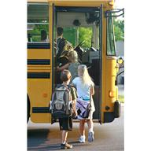

<div class='panelItemContainer'>
	<div class='panelTextContainer'>
		<div class='panelHeadline'>
			Transportation Module
		</div>


<div class='prose'>
Tracking requests for special transportation of students is a breeze with Student Plans.  Electronic Transportation Requests optimizes the communication between your special education case managers, 504 plan coordinators and health professionals with your transportation department.  Special verification procedures allow these coordinators to verify all special transportation needs for the start of summer school or the regular school year with a minimum of effort.
</div>

<div class='prose'>
No more copying, sorting and mailing Emergency Care Plans to your busing company.  Using Student Plans, you can send an electronic or printed copy of your Emergency forms to the bus company already sorted by bus route number.  You can keep these up-to-date by printing updates at any time.
</div>

				<div class='learnMore'>
				Learn More <a href='transportation/overview'>–></a>
				</div>
 </div>
 </div>